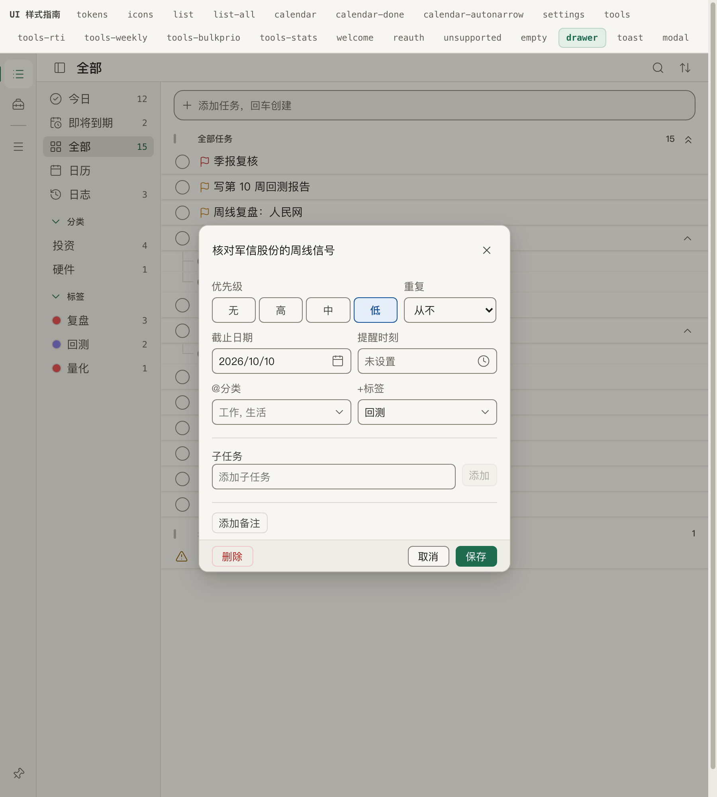
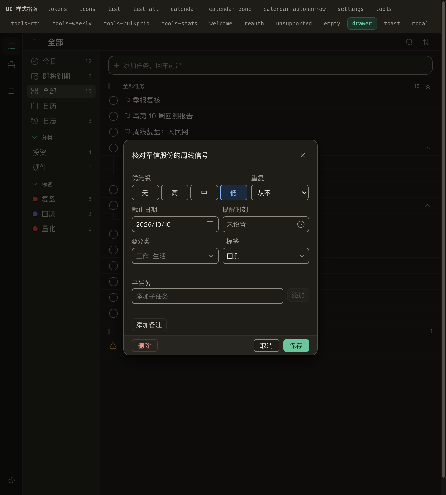
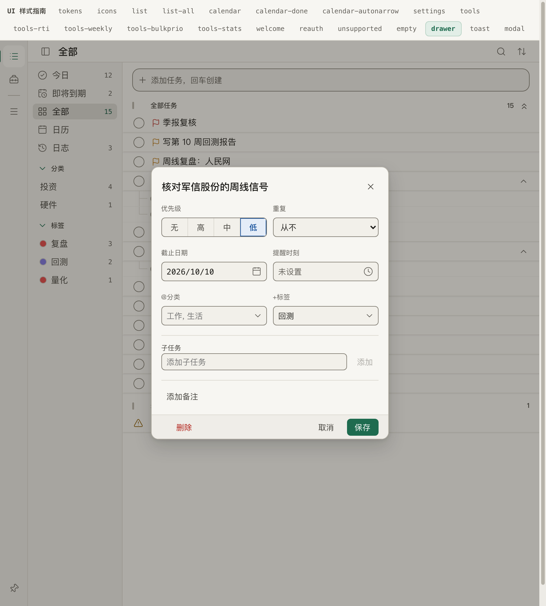
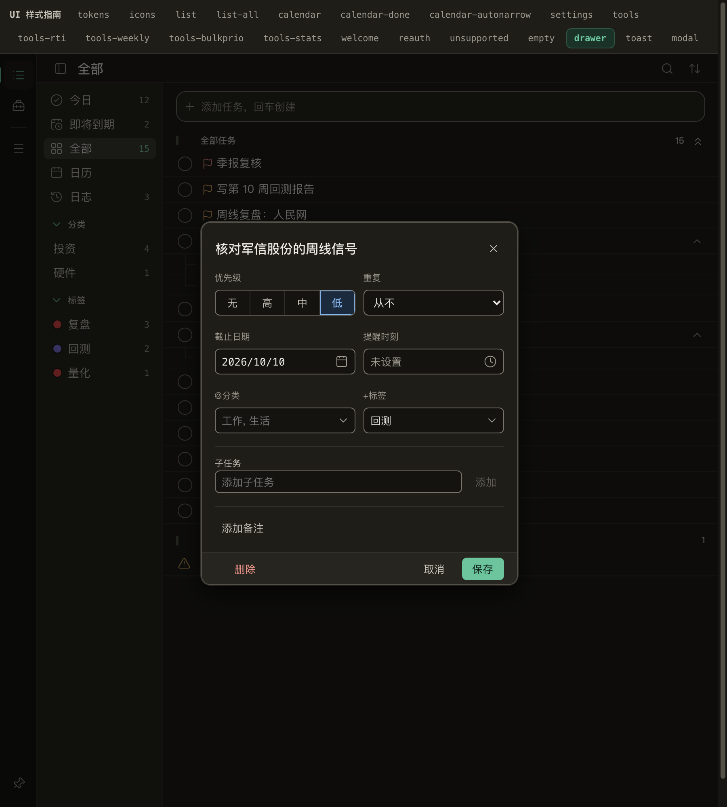
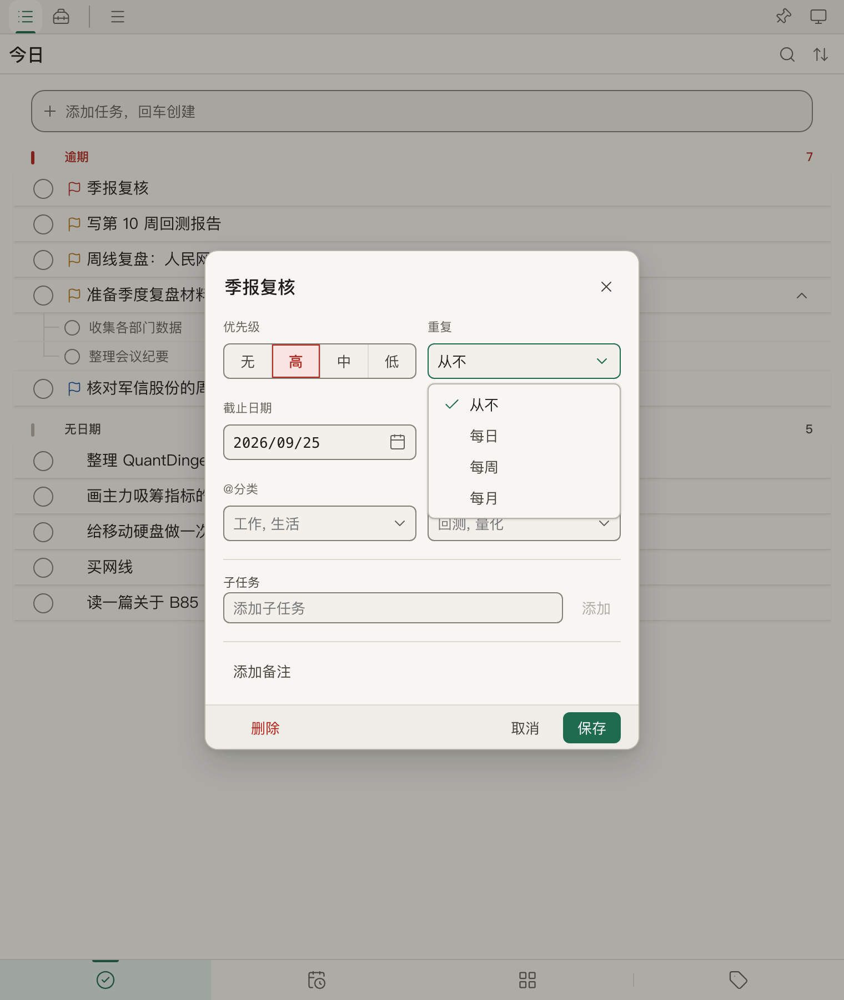
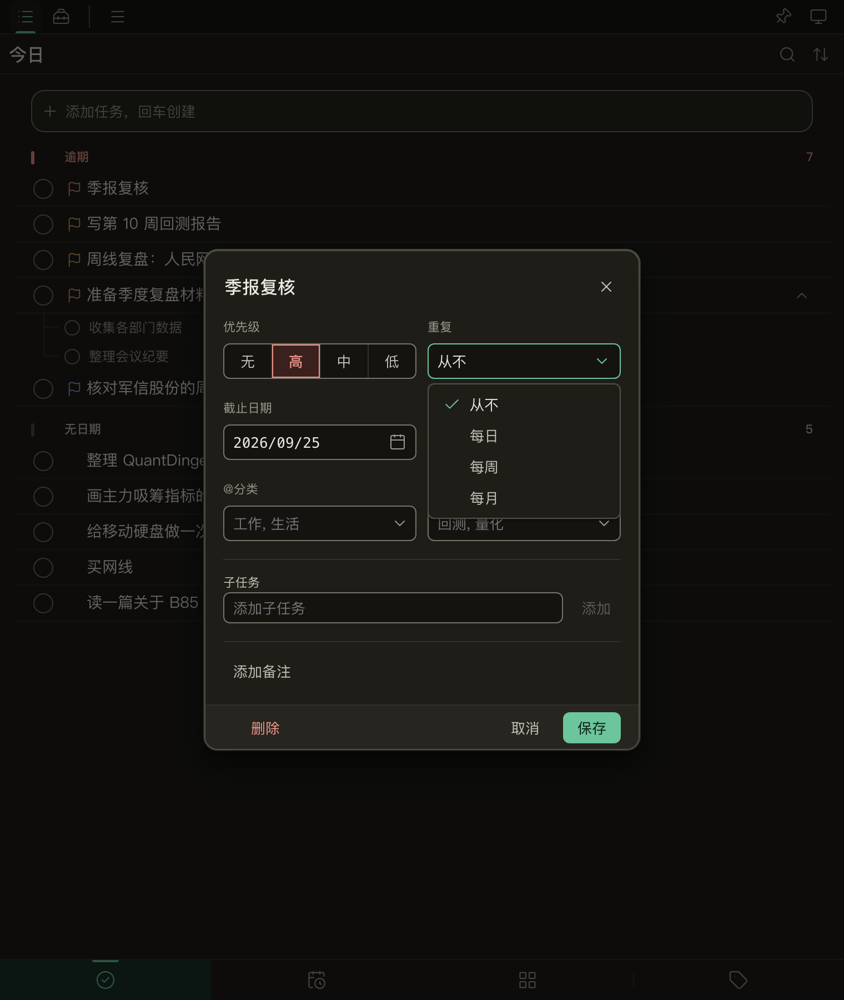
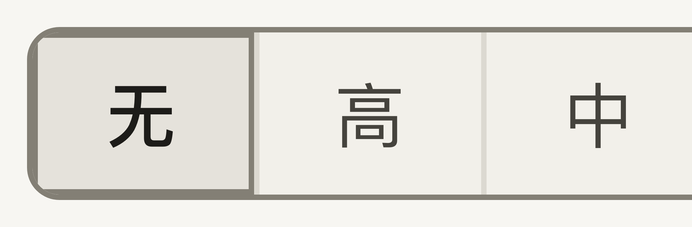
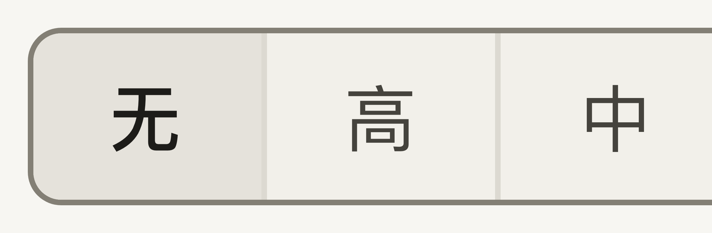
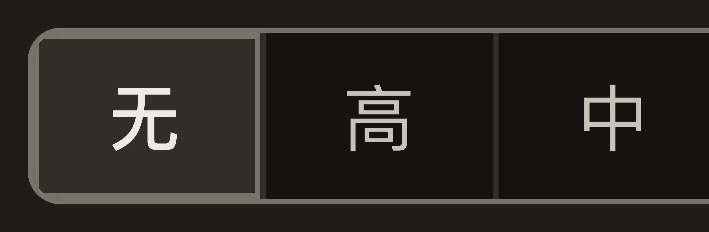
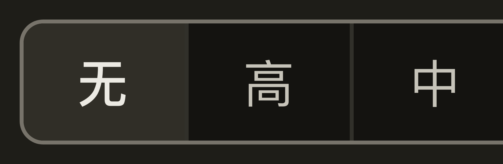

--surface）、
同一档字号（13px）、同一条描边（--control-line），于是「题头 / 值 / 刻度 / 动作」四层信息被压成了一层，
读起来像 6 个等价的字段格子加两块动作区，底栏还被削薄了一层。令牌层本身是健康的：中性色有暖度、强调色守得住「只表选中 / 今天 / 焦点」、明暗两套语义对齐。 这轮不动色相，只重排层级与几何。所有建议都可落成 CSS 变量或单条规则，不需要改数据层。
下图是 styleguide.html?view=drawer 的真实渲染（900×800 视口，明暗各用 Emulation.setEmulatedMedia 钉死一次），
也就是 EditDrawer.jsx 现在的关系。


每条都附实测值（读自 src/index.css，不是目测），以及它为什么让人读着难受。
| # | 现象 | 实测 | 为什么难受 |
|---|---|---|---|
| D1 | 三行字段三个切分点 | 2fr/1fr · 1fr/1fr | 优先级行在 66.7% 切一刀，日期行与分类行在 50% 各切一刀 —— 表单里出现两条互不重合的竖线，眼睛顺着列扫会发现「列在跳」。 |
| D2 | 刻度标签与值同字号 | 13px / 13px | .edit-window .field{font-size:13px} 被 .field>span 继承，于是「优先级」和「从不」一样大，只剩颜色一层差。 |
| D3 | 控件与窗体同底色 | #f7f6f2 ×4 | 输入框 / 下拉 / 按钮底都等于 --surface（就是窗体的底），全靠 1px 描边定形 → 392px 里读成「一片线框」，没有「可点区域」的面。 |
| D4 | 题头没有题头感 | 14px / 400 | 只比正文高 1px，下方也没有任何分隔或留白落差。窗口一开，视线找不到起点。 |
| D5 | 底栏被压成小数 | 39.9 / 25.6 | 两个值都是 calc() 乘出来的（57×0.7、32×0.8）。小数高度让 1px 描边落在半像素上；按钮又比正文控件矮一档，读作「这一栏被削了一层」。 |
| D6 | 子任务「添加」不等高 | 28 vs 32 | 输入框 --h-control、按钮 --h-control-lg，同一动作的两半相差 4px，右边那颗明显往下多一截。 |
| D7 | 备注入口是孤儿按钮 | 26.32px 描边钮 | 单独一行、孤零零一颗，和「添加子任务」是同类动作却是两种长相（一个描边幽灵、一个实底+禁用态）。全窗「往某块加内容」共有三种长相。 |
| D8 | 没有脏状态 | 0 处提示 | 取消 / Esc 静默丢弃全部修改；保存按钮恒为实底绿，改没改过都长一样。 |
| D9 | 删除没有缓冲 | 单击即删 | remove() 直接 deleteTask，且与「取消」只隔 24px 的 spacer。在一张要连着点七八下的表单里，误触代价不可逆。 |
| D10 | 入场没有过程 | 仅 fade 160ms | 遮罩淡入，浮窗本体纹丝不动 —— 在浅色大底上像「凭空闪了一下」。 |
| D11 | 深色描边过亮 | 5.01:1 | --control-line #8f8c81 对 --surface 是 5.01（阈值 3:1），控件边界全部「发光」。明暗两套读起来不像同一个界面。 |
| D12 | 空标题可以写盘 | 无守卫 | save() 直接把 form.title.trim() 写回，标题清空后保存会得到一行只有属性的任务 —— 不是样式问题，但属于同一张窗口的完工度。 |
「工作登记簿」的灵魂不变。只是把它翻译到一块 392px 的弹层上，需要三条比现状更硬的约束。
意图：编辑窗是「从账簿里抽出、放大书写的那一页」，不是 Web 表单。一页纸只有两层物理关系：纸面与凹槽。 凹槽靠底色下沉表达，不靠描边围合 —— 描边只在「被指着」（悬停）与「被选中 / 正在写」（焦点）时出现。
适用：字段数 ≥4、宽度 ≤420px 的密集表单。字段少于 3 个的轻量弹窗（例如确认框）不需要凹槽，纯纸面 + 一条横线就够。
意图：窗口里只有三种文字量级 —— 题头（16 / 500）、读数（13 / 400，数字走 mono）、刻度（11 / 400，muted）。 这就是列表读数行在用的同一套落差：字数不一样多，但「读得懂」和「看得见刻度」是两件事。层级靠字号分开，不靠加粗、不靠框。
适用：所有带字段标签的面板。反例：将来若把编辑窗放宽到 560px 或降到 3 个字段，11px 刻度会显得过小 —— 那时应该整档抬到 12，而不是把落差取消。
意图：整扇窗的实心色块上限 = 2：保存（墨绿实底）与当前优先级档（旗标色淡底）。 危险动作只留红字，不留红框 —— 红框会与「逾期」抢同一支红，而红在这个产品里只该有一个意思。
适用：任何带「确认 + 取消 + 销毁」三动作的底栏。若将来加第三个主动作（如「拆分」），它必须走 ghost，不许再加实底。
意图：三行字段统一成 1fr 1fr，让整张表单只有一条贯穿的竖线。优先级行从 2fr 1fr 收到半栏后，
四档按钮不必再挤成四颗独立小方块 —— 把它们收进一枚分段控件（见 6.1），视觉上它就是一个控件，不是四个字段，
于是「列」这件事从头到尾只有一个答案。
适用：所有双列字段组。单列（「截止日期独占整行」）也可以，但会多出 40–60px 高度，392px 窗口里不值得。
意图：刻度与凹槽之间 4→6px（让标签真正「贴」在它的控件上，而不是浮在两行之间）； 同一组内两列 8→10px（两个凹槽之间需要一道看得见但不必数的缝）；组与组 12→18px（时间组 / 归档组 / 子任务 / 备注）。 这几档加起来字段区本身只变 ±4px —— 拿层级不拿高度。
要说清的总账：窗口整体会比现在高 约 30px（+7%），来源不在节奏，而在另外三处刻意加的呼吸： 题头升档（+5）、备注块前的上边距（+16）、body 底部内边距 8→16（+8）。 如果高度是硬约束，按这个顺序往回退：先撤备注前那 16px（改回 8），再撤 body 底 padding —— 不要去压字段行的 10px，那会把刚建立的组内关系又揉平。
意图：保留现有两道 .field-sep（标签区→子任务→备注），但把 body 底部内边距 8→16px，
让备注块和底栏之间有呼吸而不是「贴着底栏被切掉」。刻意不在题头下方加第三条线：题头的层级交给字号与 14px 内边距，
再加一条线就变成三条横线把一个 392px 的窗口切碎。
意图：--drawer-actions-h 39.9→40px，--drawer-action-h 25.6→28px（即 --h-control）。
1px 描边回到整数像素、按钮与全站控件同尺。仍然比 11-17 之前的 57 / 32 矮 30%，只是把那 30% 落在整数字上。
意图：输入框与「添加」都取 --h-control（28）。同一动作的两半必须共用一把尺子，这是 D6 的直接修复。
下面是按上面五条重排后的样张，右边一组同时落了 6.1–6.3 的组件规格。同一份内容、同一个宽度，可以直接对比。
读差异时的四个抓手：① 竖线只有一条了；② 凹槽比纸面暗一档，控件不再与窗体同底； ③ 标签退到 11px 刻度、题头升到 16px；④ 底栏只剩一枚实心块，删除退成红字。
意图：--fs-md(14) → --fs-lg(16)，字重 --fw-body → --fw-emph(500)。
16px 是窗口里唯一大于读数的量级，一眼就能锚住「我在改哪一条」。
注意：不要用 600。600 在本项目是白名单（qa-typography 逐条核对选择器），
.drawer-title-input 不在名单里；而且 500 在 392px 里已经足够压住 13px 的正文。
意图：把 .edit-window .field{font-size:13px} 这条覆盖撤掉，标签回到 --fs-2xs(11) + --muted，
值保持 13px + --text。这正是列表读数行在用的那组值 —— 同一个产品里「刻度」只该有一种大小。
为什么不是 12：12 与 13 只差 1px，在 1.45 行高下几乎读不出落差；11 与 13 才是「两档」。中文 11px 已在本项目大面积使用（读数行、键位、计数），不是新风险。 若实拍后觉得 11 太细，整档退到 12，但不要再回到 13 —— 那等于取消层级。
意图：日期值、时刻值、子任务计数、重复档位 —— 这些是「读数」，改用 --font-mono + tabular-nums，
与列表里的 2026/10/10、1/2 保持同一支笔。汉字标签一律留在 --font-ui。
这是账簿签名的另一半：刻度用正文字族，数字用等宽族。
| 色相 | 窗口内的唯一用途 | 禁止 |
|---|---|---|
墨绿 --accent | 焦点环、保存按钮、子任务进度填充 | 不做 hover 描边（现状 .tag-input:hover / .date-field-btn:hover 是绿的 —— 这与「accent 只表选中 / 焦点」自相矛盾） |
红 --danger | 逾期读数、删除按钮文字 | 不做删除按钮的常驻红框（会与逾期抢同一支红） |
四档旗标 --flag-* | 优先级选中段（底 soft / 字实色） | 不做正文染色、不做图标着色 |
中性墨 --text/--text-2/--muted | 题头 / 值 / 刻度 | 不再引入第五种灰 |
意图：task.extraTags（t:、star: 这类本工具不认识的键）是「给机器看的原文」，
现在借用 .chip 的胶囊长相，容易被读成用户标签。改成 mono 11px + --surface-2 底 + 无描边 + muted 字，
排在备注下方 —— 它属于「这一行的原样」，不属于可编辑字段。
意图：「优先级」是一个属性的四档取值，不是四个独立动作。分段控件把这条语义直接画出来：
一个外框、四段等分、段间一根本色发丝线、选中段填旗标淡底 + 同色字 + 1px 内描边。它同时解决三件事 ——
D1 的第三刀消失、hover 不再是一排各自变色的方块、键盘可以用 ←/→ 在一组里选。
这不算推翻 11-17 的决定：那轮定的是「选中档用旗标同色」，配色原样保留；这轮只换容器形态（四颗方按钮 → 一枚控件）。
无障碍上建议配 role="radiogroup" + roving tabindex：Tab 只停 1 次，←/→ 换档 —— 焦点陷阱的站数因此从 4 降到 1，EditDrawer.test.jsx 里数 Tab 次数的断言要一起改。
--field-bg（浅 #f2f0ea / 深 #141310）。控件不再是纸面本身，而是纸面上挖下去的一格。--control-line；hover 只提一档底色（浅色向 --surface、深色向 --surface-2），描边不动 —— 与项目里「桌面按钮 hover 只变灰不变色」是同一条规则。border-color:var(--accent) + box-shadow:var(--ring)。accent 在这一刻才出场。| 族 | 长相 | 窗口内的用途 |
|---|---|---|
.btn 默认 | 1px --control-line + --surface 底 | 需要「明显是个按钮」的地方（子任务添加的空态可保留） |
.btn-primary | 墨绿实底 + --accent-fg | 只有保存。全窗唯一实心块 |
.btn-ghost 新 | 无描边无底，字 --text-2，hover 才浮 --surface-2 | 添加备注 / 子任务「添加」/ 底栏「取消」 |
.btn-ghost.is-danger 新 | 同上，字 --danger，hover 浮 --danger-soft | 只有删除。红字不红框 |
意图：底栏现在三颗按钮的边界都是 1px --control-line（3:1），在 25.6px 高、6px 圆角下三块硬边并排，谁也不让谁。
收成「1 实底 + 2 幽灵」之后，视线只会落在保存上，而这正是底栏唯一该问的问题。
--row-child-h（主行 −6）同口径，勾选框仍 14px（对齐列表里的子任务行）。disabled（opacity .45）。它现在是全窗第二重的实底块，而它八成时间不可点。.fields-head 行，高度锁 15px，别让进度条把行高顶成 26。意图：「添加备注」改 ghost、并与子任务「添加」同族；展开后的 textarea 沿用输入框的凹槽底与焦点环。
折叠态显示 .note-display（--surface-2 底、无描边），读作「一段抄录」而不是「一个空输入框」——
这会顺手修掉 D7 里「同一动作三种长相」的问题。
现状已合规：16px、描边 1.5、--muted。两条补充 ——
plus 图标。窗口里已经有一枚 +标签 的加号语义，再加两颗会让人分不清哪个加号加什么。意图：浮窗本体补 opacity 0→1 + translateY(6px)→0，var(--dur-2) / var(--ease-out)，
与遮罩同帧开始。物理上只是「这张纸被放到桌面上」，不是缩放弹跳 —— 后者在这个安静的产品里会显得吵。
安全：index.css 末尾已有全局 @media (prefers-reduced-motion: reduce) 兜底，无需额外处理。
注意：用 transform + opacity，不要动 height / margin —— 这条与列表行的结论同源（改盒尺寸会每帧重排）。
只在底色与文字色上做 120ms 过渡，不做滑块位移。四段加起来 190px，滑块的位移量太小，动起来像是抖了一下。
save() 现在直接写 form.title.trim()。清空标题后保存，todo.txt 里会出现一行只有 due: / +项目 的空任务，
列表上是一条看不见文字的空白行 —— 比样式问题更该先修。做法：trim() 为空时禁用保存按钮，并给标题输入框一道 --danger 描边（不弹 toast，别打断书写）。
意图：底栏「删除」第一次点击进入内联确认态：按钮文字变「确认删除」，底色 --danger-soft，2.5 秒无操作自动回退。
理由：这张表单是「要连着改七八处」的地方，弹一个 .modal-card 会打断节奏；而单击即删又不可逆。不要用 window.confirm（阻断且不可样式化）。
.modal-card（「放弃修改？」）。无改动时直接关，不添一步。关窗后补一条 toast「已保存」。列表行本身会变，但在「今天」等多个视图下改动可能不在本屏可见；一条轻提示补上闭环。
Enter 保存 / Esc 关闭 / Tab 陷阱保持不变。分段控件改 roving 后，Tab 停靠点从 19 降到 16：四颗优先级按钮并成 1 个停靠点，其余不动
（题头 → 关闭 → 优先级组 → 重复 → 截止 → 提醒 → 分类输入 / 分类箭头 → 标签输入 / 标签箭头 → 子任务输入 / 添加 → 备注 → 删除 / 取消 / 保存）。
EditDrawer.test.jsx 与依赖 lib/focusTrap 数站数的断言需同步。
明暗不是两套皮肤，是同一条语义的两次明度书写。这轮只加一个新令牌（--field-bg），
另外建议重调深色 --control-line 一支值。下表是对比度实测（node 按 WCAG 2.1 公式跑出来的真值）。
| 用途 | 浅色 | 对 --field-bg | 深色 | 对 --field-bg | 阈值 |
|---|---|---|---|---|---|
凹槽底 --field-bg | #f2f0ea | — | #141310 | — | — |
控件描边 --control-line | #837f75 | 3.50 ✓ | #8f8c81 → #77736a | 5.28 → 3.76 ✓ | ≥3.0 |
刻度 --muted | #63605a | 5.50 ✓ | #9d9a8f | 6.31 ✓ | ≥4.5 |
值 --text | #1d1c19 | 14.95 ✓ | #eceae3 | 14.77 ✓ | ≥4.5 |
焦点 / 保存 --accent | #1e6b4f | 5.63 ✓ | #6cc59c | 8.56 ✓ | ≥4.5 |
删除 --danger | #b3261e | 5.74 ✓ | #f0968d | 8.01 ✓ | ≥4.5 |
深色 --control-line #8f8c81 对纸面是 5.01:1，几乎两倍于 3:1 阈值 —— 于是每个控件都在发光描边，
一屏 8 个框就是一圈圈亮线。建议改成 #77736a：对 --surface 3.57、对 --surface-2 3.25、对 --field-bg 3.76，三处都过线且留余量。
代价：这是全局令牌，深色下所有按钮 / 输入框边界都会同时变安静 —— 方向是对的，但属于「顺手改了别处」，
所以放 P2 单独立项；若想只动编辑窗，退路是在窗内覆盖 --control-line:#77736a（不推荐，会分裂口径）。
深色 --sh-3 没有 1px 描边分量（浅色的 --sh-2 有），--border-strong #525047 对 --bg #161511 只有约 2.2:1，
窗口边界实际全靠 --overlay 0.58 压暗分开。建议深色下给 .edit-window 补一道
0 0 0 1px var(--border-strong)，让它在遮罩上也有边 —— 与浅色的双线语言对齐。
下面两张由上面那份 DOM 克隆而来（只换 tk-light → tk-dark），所以两套样张的内容、几何完全一致，差异只有色。
拆成三档。P0 全是修错位与风险，CSS 改不到 40 行 + 两处守卫，当天能完；P1 是设计语言的升级，一次成型、一起验收； P2 是体感，可以按下次改动顺手带走。
| 档 | 动作 | 落点 | 收益 |
|---|---|---|---|
| P0 | 空标题禁止保存 + 标题 danger 描边 | EditDrawer.save() | 不再写出空任务行 |
| P0 | 删除改内联二次确认 | .drawer-actions | 误触可撤 |
| P0 | 子任务 add 行等高 28 / 28 | .edit-window .subtask-add .btn | 修 D6 的 4px 错位 |
| P0 | 底栏取整 40 / 28 | --drawer-actions-h | 1px 描边回到整数像素 |
| P0 | hover 不再跳 accent（改提底色） | .tag-input / .date-field-btn | 回到自家颜色契约 |
| P1 | 列网格统一 1fr 1fr + 优先级分段控件 | .field-row-prio、新 .prio-seg | D1 + 组件语义 |
| P1 | 新增 --field-bg（明暗两套） | §1 | D3 的“一片线框” |
| P1 | 题头 16/500；标签 11 / 值 13 | .drawer-title-input、.field | D2 / D4 的层级 |
| P1 | 按钮四族（ghost 收编备注 / 添加 / 取消 / 删除） | §6 | D7 + 底栏只剩一枚实心块 |
| P1 | 纵向节奏 6 / 10 / 18；body 底 padding 16 | .field / .field-row | B2 / B3 |
| P2 | 入场 translateY(6px) + fade | .edit-window | D10 |
| P2 | 脏状态读数 + 丢弃确认 | 底栏 / .modal-card | D8 |
| P2 | 日期 / 计数走 mono | .date-field-text 等 | C3 |
| P2 | 深色 --control-line → #77736a + 窗外框补 1px | §1 | D11 / G2 |
| P2 | extraTags 胶囊弱化 | .extra-tags | C5 |
| P2 | 保存 toast | store | F4 |
EditDrawer.jsx，补两条渲染测试。index.css，跑 test:ui。--field-bg + 列网格 + 分段控件 + 字号 + 按钮族 + 节奏。这一批互相依赖（例如分段控件依赖 194px 列宽），拆开做会来回改。qa-css-check：新增 .prio-seg / .btn-ghost / .fields-head 必须在 index.css 里真的有定义，否则 JSX 用了会静默失效。qa-contrast：--field-bg 是新的底，必须把它加进「控件边界」的检查对（--control-line vs --field-bg ≥3:1），否则新底色上的对比度无人守。qa-typography：题头用 500 不用 600；11px 标签必须走 --fs-2xs 令牌，不许写裸 11px。npm test：分段控件改 roving 后，EditDrawer.test.jsx 里数 Tab 站数、断言 .field-row-prio 网格比例的用例会失败 —— 这些是契约，改实现时同步改断言，别绕。top/height；表格外所有元素 layout-shift 为 0（沿用列表行的取证口径）。npm run test:ui 全绿，且上表每一行都有一条脚本内的检查对。max-width:100% 兜底）/ 400% 缩放三档不出现横向滚动。按 P0 → P1 → P2 三档推进，全部落地。三档各自独立可跑门禁：P0 只碰守卫与几何， P1 一次成型（互相依赖），P2 逐项带走。下面是落地后的真机渲染（同一份演示数据、同一台机器， 明暗都用 CDP 钉死媒体特性，与上面 01 节的两张是同一条件）。


| 档 | 项 | 落点 | 状态 |
|---|---|---|---|
| P0 | 空标题禁止保存 + 标题危险描边 | EditDrawer.save() · .drawer-title-input.is-error | 已落地 |
| P0 | 删除改内联二次确认（Esc / 点别处可反悔） | .drawer-delete.is-armed | 已落地 |
| P0 | 子任务新增行等高 28 / 28 | .edit-window .field .subtask-add input | 已落地 |
| P0 | 底栏取整 40 / 28 | --drawer-actions-h / --drawer-action-h | 已落地 |
| P0 | hover 不再跳 accent（只提底色） | .tag-input:hover / .edit-window .date-field-btn:hover | 已落地 |
| P1 | 三行统一 1fr 1fr + 优先级分段控件 | .prio-seg（radiogroup + roving） | 已落地 |
| P1 | 新增 --field-bg（明暗两套） | §1 令牌 + .edit-window 内控件 | 已落地 |
| P1 | 题头 16/500；标签 11 / 值 13 | .drawer-title-input / .field > span | 已落地 |
| P1 | 按钮四族（ghost 收编备注 / 添加 / 取消 / 删除） | .btn-ghost / .btn-ghost.is-danger | 已落地 |
| P1 | 纵向节奏 6 / 10 / 18；body 底 padding 16 | --dr-label-gap / --dr-col-gap / --dr-group-gap | 已落地 |
| P2 | 入场 translateY(6px) + fade | @keyframes window-in | 已落地 |
| P2 | 脏状态读数 + 丢弃确认 | .drawer-dirty / .drawer-confirm | 已落地 |
| P2 | 日期 / 计数走 mono | .date-field-text / .subtask-count | 已落地 |
| P2 | 深色 --control-line → #77736a + 窗外框补 1px | §1 暗色令牌 / :root[data-theme="dark"] .edit-window | 已落地 |
| P2 | extraTags 胶囊弱化 | .edit-window .extra-tags .chip | 已落地 |
| P2 | 保存 toast | store.showToast('已保存') | 已落地 |
| # | 方案 | 实际 | 为什么 |
|---|---|---|---|
| R1 | D6：子任务「添加」28 vs 输入框 32 | 改前其实是 32 / 32 | .field input:not([type="checkbox"]) 的 32px 一直压着 .edit-window .subtask-add input 的 28px，两者同特异性、源码序后者更早，所以「不等高」这件事当时并不成立。按方案统一到 28 之后它才真的是 28 —— 于是选择器必须补上 .field 才压得住那 32，否则改完反而错位。 |
| R2 | 总高 +约 30px（+7%） | 392 × 467 → 392 × 450 | 题头升档 +5、body 底 +8 被三处抵扣掉了：标签 13→11 每行省约 3px（五行）、首行去掉 8px 组间距。结论是拿层级不必拿高度，这条比预估更划算。 |
| R3 | 未列新令牌 | + --danger-fg / --ring-danger |
实心「确认删除」上的字与「空标题」的焦点环都需要各自一对明暗值；借 --accent-fg 在语义上说不通，索性各开一枚（qa-contrast 里有「字 / 实心危险底」一组守着）。 |
| R4 | 「放弃修改？」未指定按钮主次 | 绿色给「继续编辑」 | 按 Esc 的人本来就想回到表单，把「放弃」做成实心绿等于给丢数据铺红毯。破坏性的那个放左边、红字无框 —— 与底栏「删除在左、保存在右」同一读法。 |
重复下拉不走 mono。方案把「重复档位」也列进读数，但它显示的是「从不 / 每日 / 每周 / 每月」四个中文词 ——
--font-mono-cjk 的中文回退就是系统黑体，套上去视觉与正文完全一样，只是多一层无意义的声明。
真正需要等宽的是日期、时刻、计数这些会上下对齐的数字，它们都改了。
test:ui 的对比度从 146 组增到 154 组（新增 field-bg 四组、danger-fg 一组），失败 0；
qa-css-check 无未定义类名；vite build 通过。Tab 停靠点实测 15（改前 19）——
子任务输入为空时「添加」处于 disabled 不吃 Tab，敲进一个字后回到 16，与方案口径一致。落地之后又发现一处漏网：原生 select 的弹出层由系统绘制，macOS 上是一块深灰长菜单配系统对勾 ——
既不认本项目的明暗令牌，也和这扇「一页纸」两个语气，一展开整页就像被人贴了一张别处的截图。它换成与
@分类 / +标签 候选清单同一套的自绘下拉：触发器是一枚和隔壁输入框齐平的凹槽控件，展开面复用
.tag-menu / .tag-option 与同一套先量后放，当前档打绿勾。


| 项 | 实测 |
|---|---|
| 触发器几何 | 174 × 32，与同一行的 .tag-input 同宽同高（32 / 32） |
| 底色 / 描边 | --field-bg #f2f0ea；展开态描边转 accent（浅色 #1e6b4f） |
| 展开面 | 174 × 122、圆角 6、--surface 底 + --sh-2；四档各 28 高 |
| 键盘 | ↓ 展开并聚焦当前档；Tab → 截止日期；Shift+Tab → 优先级「低」；Enter 选中后焦点回触发器 |
| Esc | 只收菜单，浮窗仍在（捕获阶段截断） |
| 窗高 | 仍是 450.2 —— 菜单是浮层，不撑浮窗 |
三个坑记在这里：① 菜单挂 body，Tab 落点必须从触发器自己算（nextInTrap(queryFocusable(容器), 触发器, shift)）——
交给浏览器会从「菜单项」起算，Shift+Tab 一路退到「保存」；② Enter / Space 要显式 click()，
别指望 button 的默认激活；③ is-open 只把描边转 accent，hover 仍只抬底色。门禁补到
51 文件 / 830 条（浮窗 51 条，其中 7 条守这一处），对比度仍是 154 组 0 失败。
又一处「精致不起来」：四段控件的选中段原本画一圈 box-shadow: inset 0 0 0 1px 的实色描边，
可 inset 描边永远贴着按钮的矩形边 —— 首段「无」的两个外角、末段「低」的两个外角都落在
外框 6px 圆角里，那条直线拐不过弯：要么被 overflow:hidden 裁掉一截留下缺口，要么戳出直角。
默认态正好是「无」选中，所以一开窗就看得见。


解法不是把描边修圆，而是不画描边：底色由父容器的圆角裁剪，天然贴合，不需要跟几何打架。
选中感改由三重给出 —— 同色相淡底（--flag-*-soft）+ 实色字（--flag-*，
中档用压深的 --flag-mid-ink）+ 半粗 500；「无 / 其它」保持中性（--surface-3 底 + --text 字）。
比一圈细框更安静，也更贴近「颜色只编码状态」这条红线。


.prio-seg > button.sel.prio-* 里不许出现 inset / box-shadow，
同时钉住外框的 border-radius: var(--r-sm) 与 overflow: hidden（底色靠它裁圆角）。
实测四档 box-shadow 均为 none，窗高仍 450.2；门禁 51 文件 / 831 条、
对比度 154 组 0 失败。